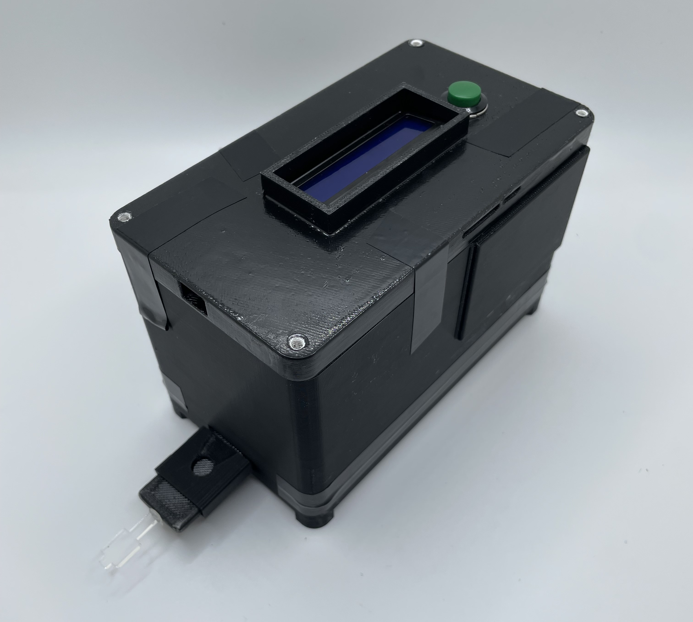

Projects
————————————————————————————————
Website & Coding ——
I developed and designed this website using html in VS Code. I am self-taught in html and have really enjoyed working on this wesbite as a side project! While it's still in the works, I believe my ability to learn quickly and grasp new concepts is displayed in this site. I am also adept in Python data analysis techniques, specifically, utilizing Pandas and Numpy dataframes to analyze and query data and Seaborn and Matplotlib for data visualization and presentation.
Check out the
html filesI created to make this website!

————————————————————————————————

Simply Sickle ™
Development of a Low Resource, Rapid Sickle Cell Detector ——
For my senior design project I worked with fellow engineering students to developed a sickle cell anemia detection device to be used in low resource settings. This device features a photobox housing unit to reduce the impact of environmental variance, a liquid crystal display to output sickle cell concentration results, and a portable battery pack for increased mobility. Blood samples are deposited on a nitrocellulose film and inserted into the housing unit via a cassette where they are analyzed using an image processing algorithm to assess the concentration of sickled hemoglobin within the patient's blood.
Check out our
project posterto learn more!